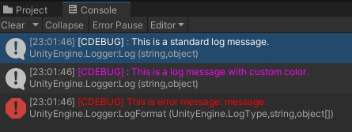
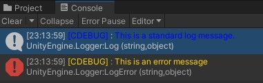
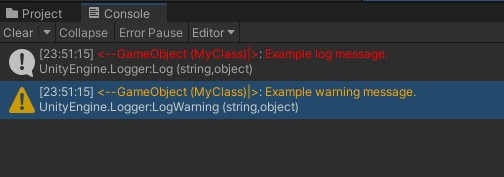

Debugging Package
Introduction
Debugging package is a wrapper around Unity's default Debug and Logger classes. It provides a few additional features that are not available in the default Debug class, such as:
- Debugging with custom
colors - Easy turning on/off debugging messages
- Automatic tags to differentiate between different debuggers
Installation
To install package, in Unity Editor go to Window -> Package Manager -> Add package from git URL and paste the following URL: https://github.com/aghcoin/coinpkg.debugging.git
Note
This article is for version 1.0.0 of the package. If you are using a newer version some things you see here might be deprecated. Full, up-to-date documentation can be found in the API section.
Static debugging with CDebug
CDebug class provides static methods to log debug messages from anywhere in the code. You can use it just like default Debug class. For example:
using CoinPackage.Debugging;
using UnityEngine;
public class MyClass : MonoBehaviour
{
void Start()
{
CDebug.Log("This is a standard log message.");
CDebug.Log("This is a log message with custom color.", Colorize.Magenta);
CDebug.LogFormat(LogType.Error, "This is error message: {0}", "message");
}
}
will give you the following output:

Note that default color of log messages is white. You can change default colors for different log types by changing DebugInfoColor, DebugWarningColor and DebugErrorColor properties of CDebug class. For example:
CDebug.DebugInfoColor = Colorize.Blue;
CDebug.DebugErrorColor = Colorize.Gold;
CDebug.Log("This is a standard log message.");
CDebug.LogError("This is an error message");
Output:

Logging with CLogger
CLogger class provides a way to create custom loggers for different parts of your code. It is useful when you want to turn on/off debugging messages for specific functionalities, have more control over what is logged at a given time, or just want to have different colors for different parts of your code.
To create a new logger, create a new instance of CLogger class and pass a string as a logger tag.
public class MyClass : MonoBehaviour {
private CLogger _myLogger;
void Start() {
_myLogger = new CLogger("MyClass");
}
}
It will create a new logger with a tag MyClass. Tag is used to differentiate between different loggers. It is displayed in the console before the log message.
You can use CLogger class just like CDebug class, but each instance can have its own settings.
Here is an example of using CLogger class:
void Start() {
// Change default log color of all instances
// For it to have any effect, you must change this
// setting before initialization of any instance
CLogger.DefaultInfoColor = Colorize.Cyan;
CLogger.DefaultWarningColor = Colorize.Orange;
// Do not force all loggers to be enabled, this is false by default
// This setting works only if CLogger.GlobalLogEnabled is set to true
CLogger.ForceAllLoggersEnabled = false;
// Initialize logger that points to this class
_myLogger = new CLogger(this) {
// Change tag decorator for this logger
TagDecorator = new CLogger.TagDecoratorPair() {
First = "<--",
Second = "|>"
},
// Override default setting for default log messages
InfoColor = Colorize.Red
};
_myLogger.Log("Example log message.");
_myLogger.LogWarning("Example warning message.");
// Disable this logger. This setting will not work
// if CLogger.ForceAllLoggersEnabled is set to true.
_myLogger.LogEnabled = false;
_myLogger.Log("This should not be logged");
}
This will result in the following output:
